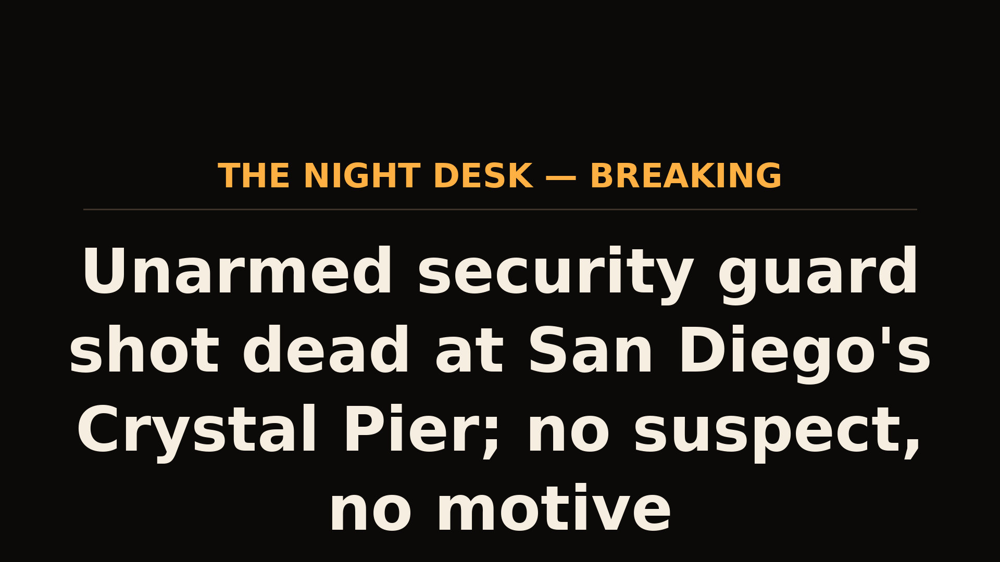

October 06, 2026
Unarmed security guard shot dead at San Diego's Crystal Pier; no suspect, no motive


Photo: La Jolla Mom (lajollamom.com); headline card: The Night Desk
Unarmed security guard shot dead at San Diego's Crystal Pier; no suspect, no motive
San Diego police are investigating a homicide after an unarmed security guard was shot and killed near Crystal Pier in Pacific Beach in the early hours of Monday morning.
Witnesses reported hearing gunshots around 2 a.m. near the 5400 block of Ocean Boulevard. Workers and patrons from nearby bars found a man on the ground and rushed to help him. He was taken to a hospital, where he died shortly after.
Police confirmed the victim was a 31-year-old man working as an unarmed security guard at Crystal Pier at the time. His name is being withheld pending family notification.
"It is unknown what led to the shooting," San Diego police said. Investigators have not released any suspect description. Police told the public they do not believe there is an ongoing threat.
Some bystanders tried to chase the shooter, but it's unclear whether the person fled on foot or got into a car.
San Diego Police's Homicide Unit is asking anyone with information to call (619) 531-2293 or Crime Stoppers at (888) 580-8477.
This is a developing story.
Photo: aerial view of Crystal Pier, Pacific Beach — La Jolla Mom (lajollamom.com). Reporting: NBC 7 San Diego / Telemundo 20.
Source: NBC 7 San Diego — read the original report
← Back to latest stories